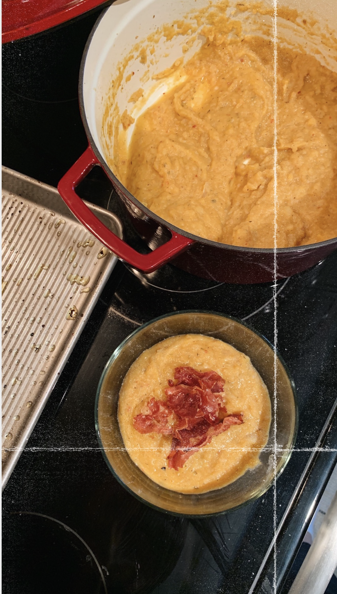

Roasted Butternut Squash Soup

Ingredients
- 2 tbs olive oil
- 1 large butternut squash, skin peeled, seeded and cubed
- 1 large russet potato, cubed
- 1 white onion, diced
- 1 apple, diced
- 1 large garlic clove, crushed
- red pepper flakes
- dried oregano
- dried thyme
- salt
- pepper
- 1/2 to 1 cup chicken broth
- 1/4 to 1/2 cup coconut milk
Directions
- Add squash, potato, and apple covered in oil, herbs and garlic to pan and roast at 425 degrees for 25-30 min.
- Sauté onion in heavy bottomed pot until translucent.
- Once cooked through, add the vegetables from the roasting pan to the pot with the onions. You can also add everything to
a blender if not using an immersion blender.
- Add chicken broth and coconut milk - start with a little, you can always add more.
- Blend - using regular or hand blender - until desired consistency.
- Taste and add more salt and pepper if necessary.
Roasted butternut squash adapted from this recipe from Half Baked Harvest.
Contact Me
Send me an email!
University of Montana
32 Campus Drive
Missoula, MT 59801